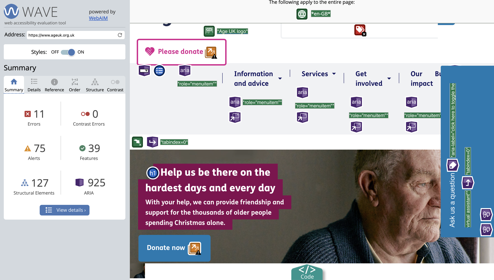
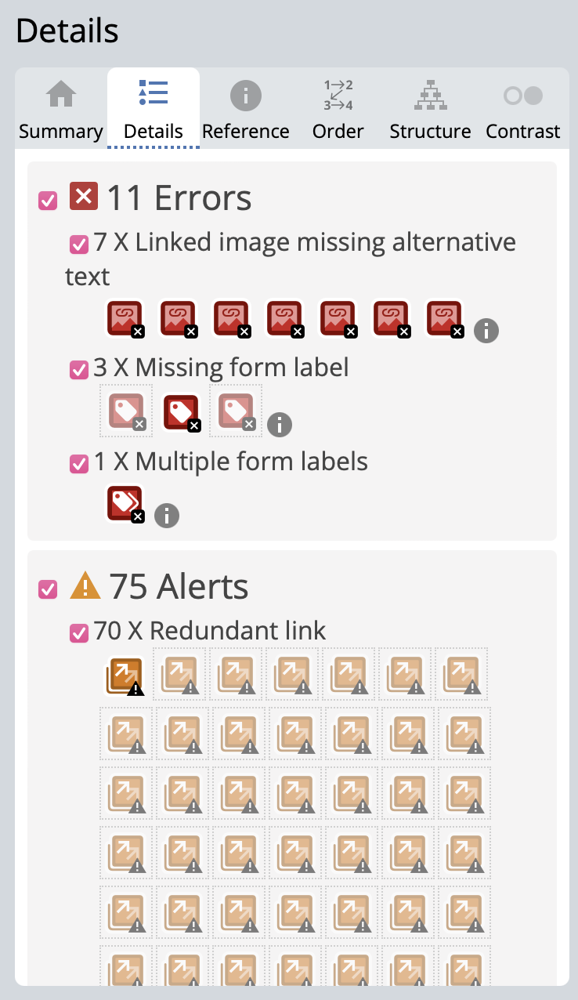
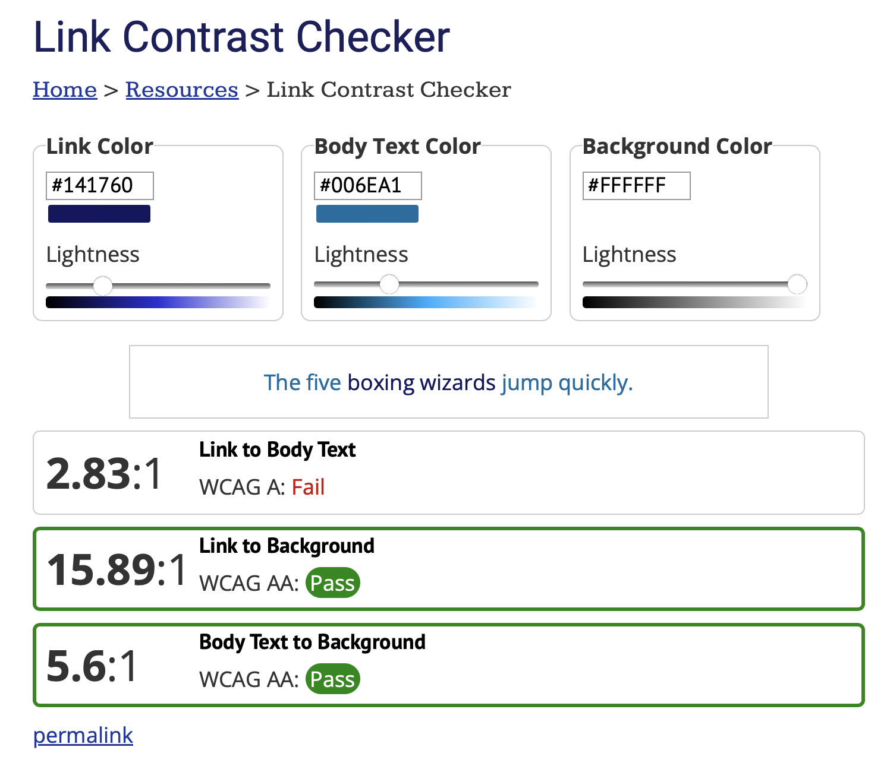
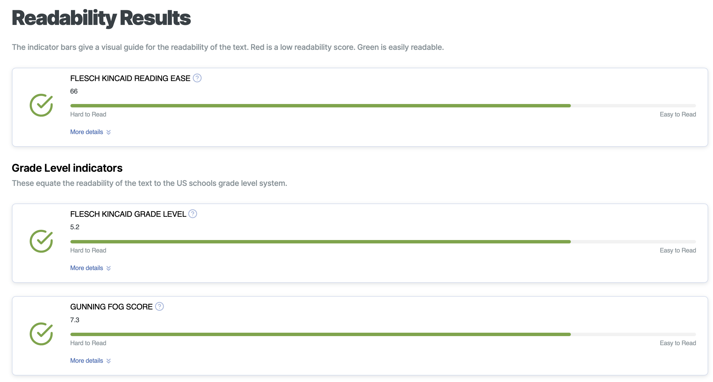
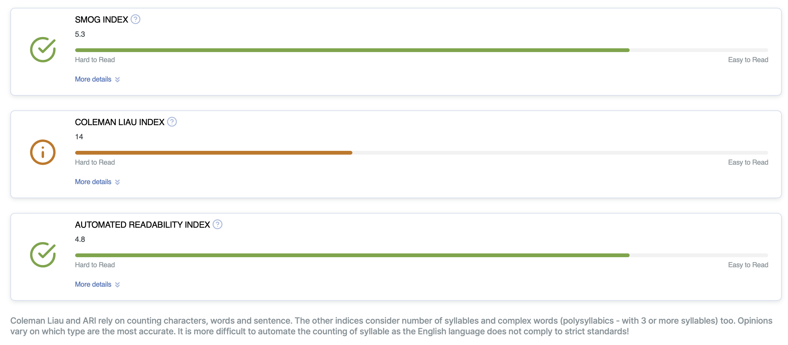

I am using Age UK for this exercise.
Findings:


This website is very accessible with a limited amount of errors. After all, the organisation specialises in working with the elderly, people with impairments, or disabilities. They have to be an example of how accessibility should look like.
According to the results, there are 70 redundant links, which upon looking though I wouldn't have called redundant as they lead to specific topics and whole other parts of the website that discuss different aspects of senior living. They were flagged as redundant because both the image and the text links for an artcle/elements are the same. However, I think that is good in this case as it increases the clickable area - user can click an image or the text to go to the same page. This feature helps seniors, people with reduced mobility, or vision impairments.
There is 7 linked images that are missing alternative text and 3 items are missing form labels, which assist screen users. As much as this is a valid concern, those are very small numbers of errors and the website is still almost fully accessible for all.
The website uses many colour combinations on the homepage. I checked two of them, but they are very clearly high contrast colours. Also, the previous evaluation website indicated that their is zero contrast errors on the site. High contrast is important for everyone. It enhances the professional look of the website and helps people with colour blindness or those with visual impairments interact with the interface.

It really surprised me to learn that the contrast between the link and text colour is a fail according to WCAG A. Both of the colours are blues, but one is much lighter than the other and you can clearly tell when you have hovered over a link. That said, apparently this needs improved at ageuk.org. However, at the same time the user doesn't need to use the text links that change colour, they can also use the images above the text that as hyperlinked as well.


According to the results, "Age UK has an average reading ease of about 66 of 100. It should be easily understood by 12 to 13 year olds." This means that the website uses simple terminology that is accessible to those who have limited knowledge of using technology. This is ideal, as the website's purpose is to guide people who want to learn how to use it.
My website is very simple to use, which makes it quite accessible. It features a large sans serif font that improves readability and a white background that provides high contrast for dark-coloured text. However, in this exercise I learned that my text to link contrast is not sufficient for WCAG A standards. The way I attempted to deal with this is to remove the underline for links once hovered over. In this way, everyone is able to see the difference between regular text and links. The alternative text is something that I could improve and focus more on in the final version of the site so that it is more descriptive for people who need it.
Try to consider at least 3 ways that you could support accessibility in your MAD(B) project
1. Breaking down information
My paragraphs are quite large at times, so I will aim to "break text down into shorter sections and use headings and subheadings to make it easy to find desired content" [1]. This is especially important for seniors, as large bodies of text can be intimidating and difficult to navigate.
2. Adding images with alt text
"A picture may be worth a thousand words, but visual elements like images are an accessibility barrier to blind users and those with low vision" [2]. I have added some alt text to my site already, but I would like to make it more descriptive for people who rely on technologies such as screen or Braille readers. I would make sure to describe the image as clearly as possible.
3. High-contrast colours
While using the contrast checkers I learned that my link colour and text colour might not be accessible. "For those who are visually impaired or colorblind, using high-contrast colors can make text much more readable. As an added bonus, using colors that have significant contrast improves the experience for not only older people or vision-impaired people but also those viewing your site from a smaller screen (i.e. a smartphone) or an older or lower-quality monitor" [3]. I would aim to achieve this by using contrast checker tools such as the WebAIM Text, Background and Link Checker.